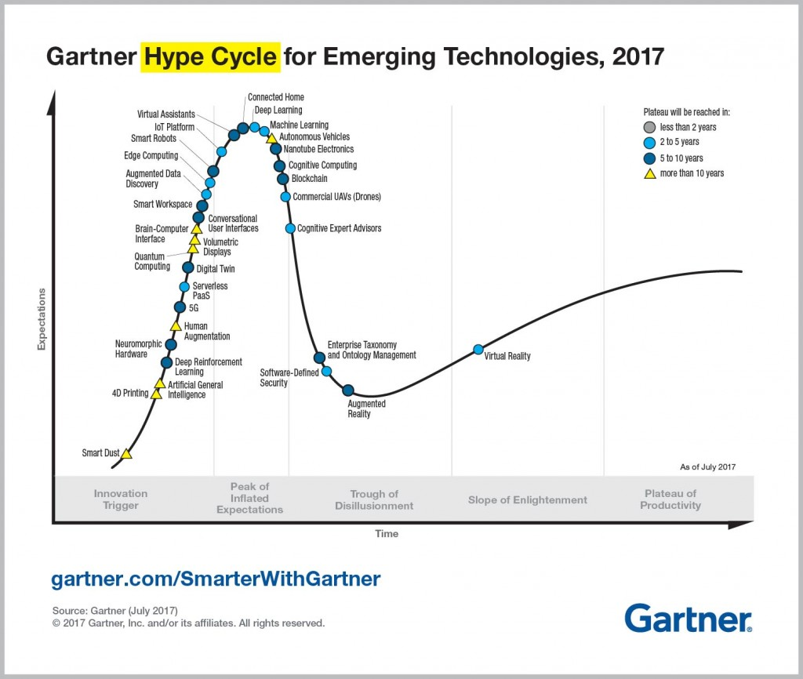
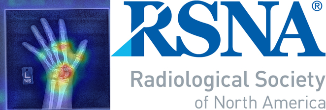
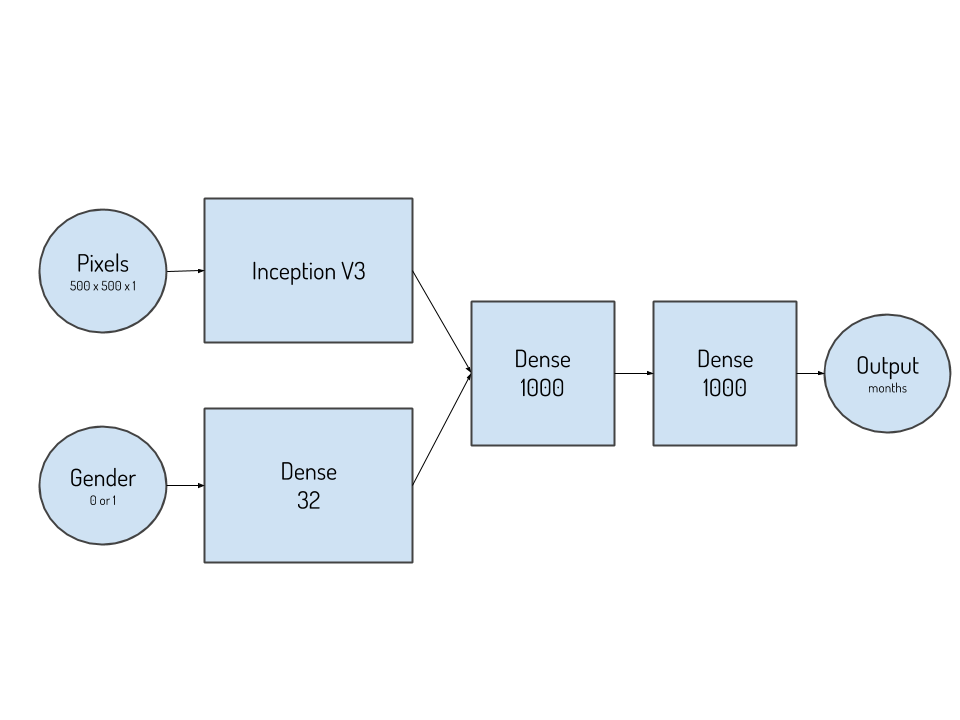
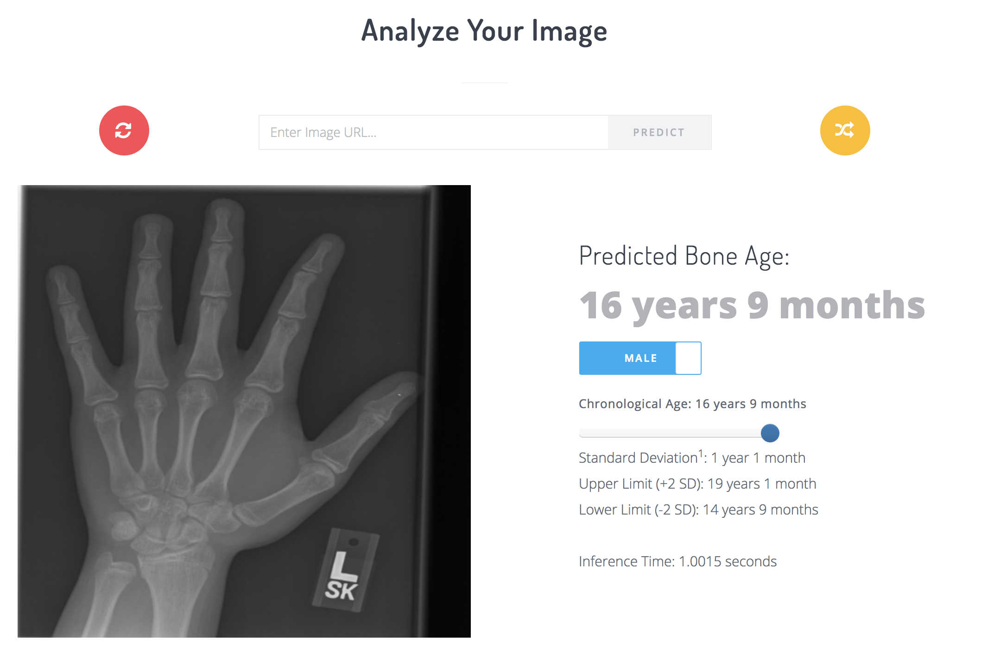

There is a lot of hype around machine learning these days. Indeed, “machine learning” and “deep learning” are at the top of the Gartner Hype Cycle for Emerging Technologies in 2017. 1 Kevin Kelly from Wired magazine went as far as to say “The business plans of the next 10,000 startups are easy to forecast: take X and add AI” . While this is easier said than done, medicine is a prime candidate for disruption from this technology as it naturally has a vast amount of data that is currently being underutilized. Arguably, medical images account for the largest share of medical data by volume.

Just as many have warned about the potential dangers of AI and the impending mass unemployment, predictions about the future of radiologists have shared a similar grim outlook. Last year, deep learning Godfather, Prof. Geoffrey Hinton stated “We should stop training radiologists right now” likening radiologists to the coyote who has run off a cliff and hasn’t realized their imminent demise.2 Large radiology organizations such as the Radiological Society of North America (RSNA) and the Canadian Association of Radiologists (CAR) have taken notice and rather than fearfully rejecting this notion, they have rightfully made this technology a central theme in their upcoming conferences.
If you work as a radiologist you're like the coyote that's already over the edge of the cliff but hasn't yet looked down so it doesn't realize there's no ground underneath him.

This year, the RSNA held a global machine learning competition to develop the best algorithm to predict skeletal age from pediatric hand x-rays.3 Hand x-rays are performed in pediatric patients with growth or hormonal abnormalities to compare their skeletal age with their actual age to ensure they are within normal limits. We typically define normal as within two standard deviations above and below the mean for that age. In 1959, W. W. Greulich and S.I. Pyle published their second edition of their “Radiographic atlas of skeletal development of the hand and wrist” which was based on the Brush Foundation Study of Human Growth and Development, done in 1929 by Professor T. Wingate Todd of Western Reserve University School of Medicine.4
While automated approaches to bone age analysis have previously been developed5 and are commercially available today, none are widely available and radiologists are stuck with the task of flipping through the Greulich and Pyle atlas to find the most similar example every time they are presented with a bone age study. With such a cumbersome and dated method, bone age analysis is one of the “low hanging fruits” of medical imaging in this renaissance of artificial intelligence.
Let’s take a look at how we approached this problem and achieved a mean absolute difference (MAD) of 4.265 months on the 200 image test set to place first in the competition.
The Data
We were provided with 12,612 training images from two U.S. hospitals donated to the RSNA from the authors of this paper (currently ahead of print at the time of this post). These images came with labels for their skeletal age in months and the gender of the patient. The first design decision we had to make was whether or not to train two neural networks (one for each gender) or a single network somehow including the gender information as an input. Skeletal maturity can vary significantly by gender, up to as much as 2 years as females mature much faster than males and commence puberty earlier. Ignoring this fundamental difference would immediately handicap the network’s performance. More on our approach to this in the architecture section.
The second critical decision we had to make was the image resolution. Standard network architectures usually accept images around 256 x 256 pixels in 8 Bit RGB format. Our image sizes were about 2000 x 1500 pixels (3 MP) in 8 bit greyscale format. Asking a radiologist to determine skeletal age on a 256 x 256 pixel image would not yield good results, therefore asking a machine to do the same would likely yield suboptimal results. On the contrary, all 3 million pixels are not required for radiologists to perform this task, and certainly training a large neural network capable of accommodating this input size would be fraught with other challenges. Therefore, we concluded there must be an optimal resolution for this problem. We experimented with various resolutions up to 750 x 750 pixels. We decided that 500 x 500 pixels was an optimal size for the problem, provided dataset, and our available GPU memory.
We split the provided data into an 85:15 training:validation split resulting in 10,720 training images and 1,892 validation images. Given the relatively small dataset we decided to be a bit more aggressive in favor of the training set to maximize the number of examples the network could learn from. We attempt to mitigate the smaller validation set by averaging several of our best models at inference time (more details below). We opted to not allocate a test set because the leaderboard phase provided 1,425 additional images without labels which would serve this function. Data normalization was not used on the entire set as we were using architectures which employed batch normalization which has been shown to be effective at reducing internal covariate shift.6
The Architecture
Our best model incorporated the Inception V3 network to handle the image input. We tried a variety of other popular networks including Inception V4, ResNet 152, DenseNet and InceptionV3_SE. Keras provides many of these architectures out of the box which is quite useful for testing. We modified them as shown in the below schematic. We extracted the layer after the final concatenation layer from the Inception V3 network, flattened it, and concatenated it with our gender network which took as input binary gender information (0 for female or 1 for male) and fed it through a 32-neuron densely connected layer. The concatenated layer was fed through two additional 1000-neuron densely connected layers with ‘relu’ activation before the final single-output linear layer.
The motivation for this design stems from the relative contribution of each input (pixels and gender) into the final decision. At our concatenation layer, the pixels contribute 100,384 inputs while the gender contributes 32. We picked this ratio because we did not want to bias the network too significantly based on gender input, but we wanted to give it the ability to impact the overall prediction. The additional dense layers give the network more learnable parameters to adjust during training to allow it to reason out the relationship between the pixel and gender information.
A single numeric output rather than separate classes for each month was more intuitive and came with the added benefit of avoiding similar classes activating together. It is unlikely that multiple-class output would work as well because it would not take advantage of the ordinal relationship between bone age values, however, we did not test this.
Training
We performed over 40 experiments over the course of 1 month leading up to the competition closing deadline varying the architecture, dataset, optimizer, batch size, loss function and hyperparameters. We used Keras 2.08 with TensorFlow 1.3 on the backend using Python 3.4. We ran these experiments on 2 machines, one housing an NVIDIA P40 and two Titan X GPUs and another housing a single Titan X. No data or model parallelism was used (i.e. each experiment was run on a single GPU). We did not employ any pre-trained models because our input image size was larger than what is typically used and we felt the dataset was large enough to effectively solve the problem using a randomly initialized network.
The 500 x 500 pixel dataset, gender information, and labels were loaded into memory at runtime. Having the entire dataset in memory also enabled real-time data augmentation on the entire set using a Keras ImageDataGenerator. For the training set, we used a rotation range of 20 degrees, horizontal/vertical translation up to 20%, zoom up to 20% and a horizontal flip. No augmentation was used on the validation set. These values were chosen based on our “radiologist gestalt” as to what would be realistic variance from image to image in practice.
train_datagen = ImageDataGenerator(rotation_range=20, width_shift_range=0.2, height_shift_range=0.2, zoom_range=0.2, horizontal_flip = True)
Without augmentation, at a resolution of 250 x 250 pixels, we achieved MAE in the range of 8-9 months. Not only does real-time augmentation drastically multiply the dataset which improves learning, but each of the transformations selected were chosen to improve generalizability. By doing this, we force the network to learn features which are intrinsic to the patient rather than the imaging technique. Images of a child’s hand can easily be acquired with varying zoom, rotation, position as well as either the left or right hand and these factors do not impact our abilities as radiologists to analyze the image.
Finally, we trained the final model with a minibatch size of 16 for 500 epochs (approximately 50 hours) with the ADAM optimizer attempting to minimize mean absolute error of the output. We reduced the learning rate when the validation loss plateaued.
optim = optimizers.Adam(lr=0.001, beta_1=0.9, beta_2=0.999, epsilon=1e-08, decay=0.0)
reduceLROnPlat = ReduceLROnPlateau(monitor='val_loss', factor=0.8, patience=10, verbose=1, mode='auto', epsilon=0.0001, cooldown=5, min_lr=0.0001)
As firm believers of “you can’t improve what you don’t measure”, we felt it imperative to monitor our model’s Concordance Correlation Coefficient (CCC), the metric used as the tie-breaker in the competition, throughout training so we wrote a custom Keras callback function to do this.
Our best three models each achieved MAD of 5.99 months on the validation set. Our fourth and fifth best models achieved MAD of 6.00 and 6.04 months. The CCC remained between 0.98-0.99.
Inference
A variety of inference techniques exist to improve model performance and in a competition as close as this, even incremental improvements are advantageous. Many papers reference a 10-crop-validation scheme where they take random crops of the model and average the model’s predictions to reduce the effect of outlier predictions. We devised a similar scheme which helped and implemented it as a generator in Keras. Through a bit of experimentation we found the following parameters to yield the best results.
val_datagen = ImageDataGenerator(width_shift_range=0.25, height_shift_range=0.25, horizontal_flip = True)
We ran each test image through a generator to yield 10 samples for each of our top 5 models resulting in 50 predictions for each test image. We then averaged the results and rounded to the nearest integer to arrive at our final prediction.

We have prepared a live web demonstration that is running one of the trained models inside a Flask server. You can upload your own image from a browser, take a picture on a mobile device, or pick a random image from the test set.
Try our bone age model
Conclusion
Larson et al. performed extensive statistical analysis on the interobserver difference for the images in the provided test set which was independently reviewed by three additional pediatric radiologists. They found that the MAD between a reviewer and the average of the other reviewers ranged between 0.53 to 0.69 years (6.36 to 8.28 months) with a mean of 0.61 years (7.32 months). So with our algorithm achieving a MAD of 0.36 years (4.265 months) is Prof. Hinton right? Should we stop training radiologists?
We think that this could not be further from the truth. It is critical to remember that AI is a collection of algorithms and approaches which use data to solve specific problems. Radiologists will be essential for the future of AI in medicine as they are best positioned to identify, direct, and implement AI to solve the most impactful clinical problems facing medical imaging today. Medical imaging has become a cornerstone in medicine with nearly every medical specialty relying on it to diagnose, exclude, or monitor many conditions before making treatment decisions. Propelled forward by the active radiology research community, we continue to widen our breadth and add value to a growing array of clinical contexts. Instead of heralding our demise, intelligent tools will broaden our reach and impact as a specialty by improving our efficiency and helping us to maintain the same high level of accuracy and quality. Machine learning, deep learning, artificial intelligence (whatever you want to call it) will be the foundation of these next-generation tools and, ultimately, will allow us to provide faster, better, and more reliable care to our patients.
No, we need to continue training radiologists to bring about this astonishing new era in health. Intelligent triage algorithms will allow the implementation of cancer screening programs that were not previously viable, augmented back-end tools will be able to immediately notify referring clinicians of a potentially acute finding on a patient’s scan as soon as it is acquired, mining large imaging and clinical datasets may reveal new prognostic factors that have never been considered, and the list goes on… It is an exciting time to be a radiologist as the value we add will only be amplified by this new technology, however, we have one recommendation - radiologists better embrace the wave of change or risk being left behind.
Acknowledgements
A huge thank you goes out to the RSNA Machine Learning Challenge organizing committee for their efforts in making this competition a success. The authors (Larson et al.) and hospitals who donated the data (Lucile Packard Children’s Hospital at Stanford University and Children’s Hospital Colorado) also deserve congratulations. We think one of the key challenges to this kind of research and development is access to high quality data and none of this work would be possible without the hard work of these people and organizations.
We would also like to acknowledge our technical sponsors, NVIDIA for the donation of the GPUs we used for training and Carbon60 Networks for providing the infrastructure to run the demo.
Join us at the 2017 RSNA Conference on Monday, November 27, 9:30 - 11:00 AM at the Machine Learning Showcase in the North Technical Exhibits Building, Hall B, McCormick Place, Chicago and at the NVIDIA Partners Booth (#8543) at 1:30 - 2:30 PM.
References
[1] https://www.gartner.com/smarterwithgartner/top-trends-in-the-gartner-hype-cycle-for-emerging-technologies-2017/
[2] https://www.youtube.com/watch?v=2HMPRXstSvQ
[3] http://rsnachallenges.cloudapp.net/competitions/4#learn_the_details
[4] https://www.amazon.ca/Radiographic-Atlas-Skeletal-Development-Wrist/dp/0804703981
[5] Lee, H., Tajmir, S., Lee, J. et al. J Digit Imaging (2017) 30: 427. https://doi.org/10.1007/s10278-017-9955-8
[6] Ioffe, Sergey, and Christian Szegedy. "Batch normalization: Accelerating deep network training by reducing internal covariate shift." arXiv preprint arXiv:1502.03167 (2015).